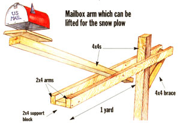

Perhaps you've never thought about build ing your own mailbox. Or, if you have, you've imagined a frustrating process that would take up too much of your time. Well, if you do decide to build one (or ask someone who has), you'll find that while there's quite a bit of a planning to do, it's not so difficult after all-and you'll have the benefit of admiring your work every time you pick up the mail.
When our country lane was raised a foot and paved, the roadside RFD mailbox proved too low for the motor-carrier to reach, especially with New England snow plowed up around it. We decided to replace both the rusty metal box and rickety wooden support post, and faced decisions that all country people make.
The first step is choosing the actual box, and you'd be surprised at all the options open to you. However, there are some rules of thumb which can make deciding easier. First, decide on the material. The sturdiest boxes available to you are domed, galva nized, sheet-metal boxes, but be warned-they will begin to rust after about five years if they're not repainted. Plastic boxes, on the other hand, will break easily but won't rust. So it basically comes down to an honest assessment of your character-if you're not real lazy, then go for the sheet-metal.
As for box size, you will need to determine what kind of mail you receive most often. A small-size box is fine for a low-volume of first-class mail and a few magazines now and then. A mid-size box is a better choice if you receive a lot of periodicals or small parcels; and the giant-size is best suited for those who shop regularly by mail. If there's any doubt, opt for the larger size-mail carriers hate having to cram your mail in the box (as much as you hate receiving it that way). Often they'll leave a "Box at P.O." note if a package is too big, and believe me, it's a real nuisance to have to drive down to the Post Office every time a shipment of new checks comes in or L.L. Bean has refurbished your gum boots.
Customized mailboxes are fine, so long as they're within the limits of postal regulations and local sensibilities. Flowers planted around the post base, or a flower box attached behind the mailbox, will delight almost everyone. So will images of flowers and animals, or old-time stencils-anything that is country-natural. Those colorful plastic sheaths with sailboats, deer, or ducks on fiberglass-domed boxes can proclaim your favorite outdoor sport. A model of your house or barn can make a good mailbox if it is built sturdily. And you can make a mailbox of an old nail keg or bee hive, as long as it's weather-tight, has an easily-opened door, and will support an easily-rotated flag.
If you're a newcomer to the area, do consider your neighbors. Not until you're an established member of the community does your mailbox lose social significance. When Harvey, the local dairy farmer, took a wife 30 years his junior, he sent eyebrows (even farther) up when he adorned his mailbox with a model of a big, masculine Holstein bull. Frowns turned to smiles a year later when the box was adorned with a bunch of blue balloons to announce the birth of his son.
As for your mailbox's support system, it can be anything from a stout wooden pole to an angle-iron fence post. Probably the easiest material to work with is a four- or six-inch (square or round) timber of pressure-treated lumber. This so-called "PT" is real easy to find-you can pick some up in outside storage at any country lumberyard. It's a greenish color, but you'll see it age to gray after time and weathering. It's infused with a copper/arsenic preservative, and will last an entire generation or more.
Once you've selected your post, fasten the box directly on top of it. Or, for a post with an out-jutting arm that won't be damaged by passing vehicles, affix a horizontal crossmember a foot down from the top of a six-foot post. Miter a single 4 x 4 horizontal into the vertical member, or bolt or lagscrew a pair of 2 x 4 or 2 x 6 PT boards in an upside-down "L" or "T" to each side of the post. Diagonal supports at the front of an "L" or back of a "T" will add strength. Cut and fit the wood before sinking the post-it's easiest to anchor posts before attaching the horizontals.
Movable mailboxes are a good idea if you plan to modify your driveway soon. To do this, wedge the post with rocks or short lengths of 2 x 4s in a couple of stacked concrete blocks or inside a concrete, gravel, or sand-filled old-time milk can, weather-proofed wooden keg, ceramic butter crock, or other attractive, rustic container. Cap the top with tar or mortar if the container can't be drilled at bottom-lest it fill with water, freeze, and burst at the same time it rots a wooden post.
There are hole-drilled attachment flanges every few inches around the bottom of commercially made mailboxes. Don't try to nail the box directly to the post. Instead, cut a board to fit into the skirt, fasten the board securely to the post, and then nail the box to the board. You may want to move or replace the box some day, so don't use hard-to-remove conventional nails. Use such removable fasteners as weatherproof drywall screws or dual-headed pull-nails (used to attach electric fence insulators).
The first step to installation is deciding on the location. You should always make sure that your mailbox is in the most convenient place for the carrier. The most accessible location is the far right margin of your driveway entry (if you are looking out from of your house). If a carrier approaches your home from the right, the box will have to be across the road. If you get the mail coming home from work, locate the box so you can pick it up from your own vehicle-20 feet or so before the turn-in to your driveway. If you don't own the field across the road, make sure you ask the owner for permission to install there. If there's another home across the road, ask if you can't locate your box alongside the neighbor's-perhaps you can share a post.
For a stationary installation, bury a post two feet deep in the ground, and tamp rocks and soil around the area. Or a better idea is to anchor it with concrete and/or stones in a bed of good-draining gravel. Dig your hole 2 1/2 feet deep and no wider than necessary (a clamshell posthole digger will make a quick foot-wide hole). Then tamp soil at the bottom, and compress the sides of the hole with a length of stout wood. Put a six-inch layer of gravel at the bottom, and tamp well. Next, set in the post and add another six inches of gravel, tamping well around the post. Prepare an 80-pound sack of concrete mix according to package directions and pour it in around the post to make a collar (adding in clean rocks if you have them). Use a level to get the post square, and let the concrete cure overnight. Then fill the hole with soil, tamping one final time.
The great thing about using posts of metal-plumbing pipe is that they'll last forever. Just be sure you anchor in a 6-to12-inch-thick pad of concrete and rocks set a foot below ground level. Use a five- or six foot-long galvanized pipe (threaded at one end) to use for the vertical member, a threefoot-long pipe for the horizontal, and an elbow. When you apply the plumbers joint compound to the threads, use monkey wrenches to join the pipes tight to the elbow in an upside-down "L" Then with an electric drill and high-speed bit, drill two up-and-down holes in the horizontal member, and bolt the box-sup port board to it. Give the whole thing several coats of rust-proofing spray paint and let dry.
Another idea is to make a counter-weighted pipe post using a "T" fitting in place of the elbow. Center one end of an 18" length of pipe in a coffee can and tamp wet concrete mix around it, rounding and smoothing the top. When the concrete sets, affix the threaded end to the inner side of the "T." Make sure you paint the can especially well to prevent rust.
To set a pipe post, insert the end of the vertical pipe through a fresh-poured concrete pad and tap it down into the hole-bottom gravel layer. Use a carpenter's level to assure that the pipes are plumb and square. Then, as the concrete sets up over the next few minutes, rotate the vertical pipe so it will be free to swivel to the side if banged by the plow. Let the concrete set overnight, fill the hole with soil, and make sure it is tamped well.
POSTAL DRIVERS PROVIDE SERVICE SIX DAYS A WEEK THROUGH THE WORST KIND OF WEATHER.
A HOLIDAY TIP IS DEFINITELY IN ORDER.
The mailbox that fronts your driveway (or clusters with others at the nearest traveled intersection) is more than than a receptacle for letters and magazines. It makes a public statement-especially if you are newcomers from town. You don't want your neighbors to misinterpret your mailbox's appearance as a reflection of your rural values. Case in point:
Awhile ago, new owners bought an elegant vacation home on a hill overlooking the last operating dairy farm in town. On their mailbox was a figure of a smiling cow, which I'm sure they considered friendly and cute. Harvey, the hard-working bachelor farmer did not. He felt patronized by his affluent new neighbors. "Them new summer people may grin at 4 A.M. milkin's," he said, "but I don't."
So design and install your mailbox to complement (or at least not offend) its environs. Of course, it is your mailbox-its looks are up to your own good taste; its construction is up to your home-handy skills. But, if you're moving onto an estab lished country place, leave an existing mailbox as is for a while-replacing an old but serviceable mailbox may be viewed as a city-rich extravagance, while scraping off rust and painting it would be virtuous, country economy.
As soon as you can, visit the local post office and introduce yourself to the postmaster. Don't be surprised to hear "Oh, you're the folks who bought the old Peters' farm," and then to have your home referred to as "The Peters' Farm" for the next generation. Find out the official name of your road (many country roads go by several), and your rural route and box numbers to send your correspondents. Give the postmaster the full names of everyone who will be receiving mail at your place. Also, ask the name of your rural motor route carrier and the approximate time of mail delivery. If you can, be out at the box to say hello at the first opportunity.
Keep the roadside-shoulder area by your box free of rocks, kids' bikes and snowfall before delivery. If the ground beside your box is rough, fill the depressions with crushed stone, or grade and fill with a few whacks of a stout hoe or pickmattock. Smoothing out a long-rutted approach in front of your new place is a good way to befriend the carrier. If your box is on a fresh portion of the roadside berm, the topsoil just off the road surface will furrow quickly in wet weather. Fill ruts with soil or gravel until it is dry and compacted.
Tips are definitely appreciated. Drivers do a lot of personal service six days a week through the worst kind of weather. The more you use ancillary services (such as leaving money and asking the carrier to make change, mail packages, or sell you stamps), the more a tip is in order. Christmas is the traditional time, and $10 to $20 is a safe amount if you can afford it. If you can't, homemade bread or preserves, or a small personal gift are as well-received. Don't leave candy, cookies, or fruit cake-especially the bought kind.
Lastly, don't use use your mailbox for purposes other than mailings (such as leaving eggs out for the neighbors). Newspaper carriers should not use the box except on Sundays and federal holidays. Have them put up a separate paper tube to the side of your mailbox post opposite the flag. Always inform the post office with a phone call or note to the carrier if you will be away for more than a day (unless your neighbor can pick up the mail).
|
DEBRA TETREAULT |
ILLUSTRATIONS BY SUSAN SCANLON |
 Debra Tetrault |
|
|
|
|